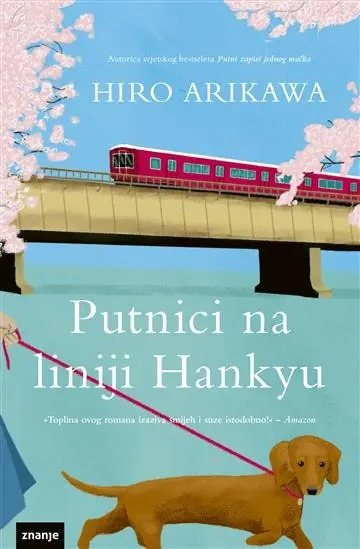

Toplo, bez viška drame
Putnici na liniji Hankyu
Hiro Arikawa, Znanje
15,90 €
Na zalihi, šalje se u dva radna dana
Iz knjižare
Petnaest minuta vožnje i nekoliko stanica. Toliko treba da se nekome promijeni smjer.
Kratka linija Hankyu između Takarazuke i Nishinomiye, nekoliko stanica i petnaest minuta vožnje. Putnici se međusobno ne poznaju, a ipak jedni drugima mijenjaju smjer.
Arikawa ih prati u dva navrata, u razmaku od pola godine. Nije ljubić u uobičajenom smislu, nego tiha knjiga o tome koliko malo zapravo treba.
- Autor
- Hiro Arikawa
- Nakladnik
- Znanje
- Uvez
- Meki uvez
- Broj stranica
- 212
- ISBN
- 9789535303992